Home
About Us
Team
Profile
Contents
White Board picture
Reflection and Refraction
Videos
Lectures
Homework Videos
Our Groups
الصف الثاني الثانوي

الانعكاس
زاوية السقوط:
45
°
الانكسار
زاوية السقوط:
45
°
الهواء (n = 1.0)
الماء (n = 1.33)
الزجاج (n = 1.5)
الألماس (n = 2.42)
الماء (n = 1.33)
الزجاج (n = 1.5)
الألماس (n = 2.42)
الهواء (n = 1.0)